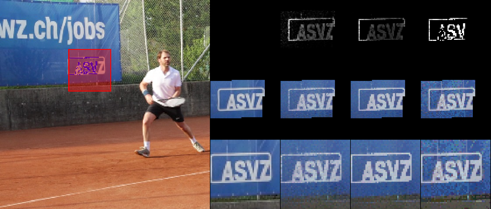
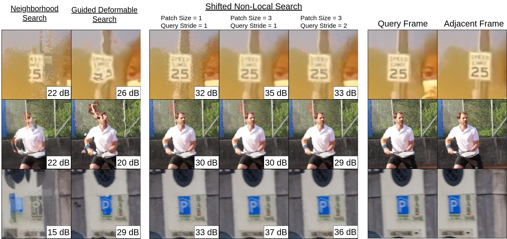

Deformable Modules for Deep Neural Networks on Videos
Streaming Space-Time Superpixels
 |
Incorporating image formation models into deep neural networks acts as an inductive bias, which, in principle, reduces the number of required parameters and training data to achieve a desired benchmark result. Superpixels are a type of image formation model. However, current methods to estimate superpixels are defined for a single image, and usually rely on SLIC-based superpixels. The drawbacks to SLIC-based methods are well-known, and a recent superpixel method named BASS is faster and produces higher-quality results. This paper incorporates BASS as a module within a deep neural network and presents its space-time extension. Our core novelty is a function that transitions the previous frame's superpixels to the next frame in two steps: (i) a space-time rigid-body transformation and (ii) a deformable transformation to handle overlaps and holes. Our extension requires half the wall-clock runtime as standard BASS and creates temporally consistent space-time superpixels. The left image shows our algorithm to propogate superpixels from frame \(t\) to frame \(t+1\). From left to right: The leftmost image is frame t. The second image (a gif) shows each superpixel being shifted according to the optical flow. Red color indicates regions of overlapping superpixels (overlaps) and blue color indicates regions with no pixel values (holes). The third image (another gif) shows the holes and overlapping regions being iteratively filled with our algorithm. Once filled, this image is equal to frame \(t+1\). The fourth image in the figure is frame \(t+1\) for reference. |
Superpixel Neighborhood Attention: Beyond Square Windows
|
 |
[pdf, code] Images contain objects with deformable boundaries, such as the contours of a human face, yet attention operators act on square windows. This mixes features from perceptually unrelated regions, which can degrade the quality of a denoiser. One can exclude pixels using an estimate of perceptual groupings, such as superpixels, but the naive use of superpixels can be theoretically and empirically worse than standard attention. Using superpixel probabilities rather than superpixel assignments, this paper proposes soft superpixel neighborhood attention (SNA) which interpolates between the existing neighborhood attention and the naive superpixel neighborhood attention. This paper presents theoretical results showing SNA is the optimal denoiser under a latent superpixel model. SNA outperforms alternative local attention modules on image denoising, and we compare the superpixels learned from denoising with those learned with superpixel supervision. |
Space-Time Attention with a Shifted Non-Local Search: A Grid Search Beats a Deep Neural Network
|
 |
[pdf, code] Computing attention maps for videos is challenging due to the motion of objects between frames. While a standard non-local search is high-quality for a window surrounding each query point, the window's small size cannot accommodate motion. Methods that accommodate motion use an auxiliary network to predict the most similar key coordinates as long-range offsets from each query location. However, accurately predicting this flow field of offsets remains challenging, even for large-scale networks. Small spatial inaccuracies significantly impact the attention module's quality. This paper proposes a search strategy that combines the quality of a non-local search with the range of predicted offsets. The method, named Shifted Non-Local Search, executes a small grid search surrounding the predicted offsets to correct small spatial errors. Our method's in-place computation consumes 10 times less memory and is over 3 times faster than previous work. Experimentally, correcting the small spatial errors improves the video frame alignment quality by over 3 dB PSNR. Our search upgrades existing space-time attention modules, which improves video denoising results by 0.30 dB PSNR for a 7.5% increase in overall runtime. We integrate our space-time attention module into a UNet-like architecture to achieve state-of-the-art results on video denoising. |